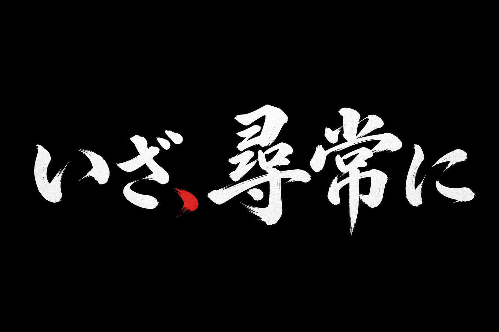

Python · Flet · Supabase · Mobile
居合デュエル
カービィ「刹那の見切り」リスペクトの居合ゴースト対戦。合図「！」の瞬間にタップして反応速度を競う。Flet でスマホ向け UI、江戸風タイトルと掲示板モード選択、Supabase による全国ランキングと非同期対人戦を実装。


PLAY
PC では Python + uv でローカル起動。Web 版は Docker / Hugging Face Spaces 向けの構成を同梱（デプロイ準備済み）。
git clone https://github.com/koyomivanp/iai-duel.gitcd iai-dueluv run iai_duel.py
Web 配信: FLET_FORCE_WEB_SERVER=true uv run iai_duel.py で同一 Wi-Fi 内のスマホからアクセス可能。
モード
- 孤城突破 — CPU 剣豪 5 人抜き
- 死闘 — ゴーストとの連勝バトル
- なぞり斬り — 太刀筋を見切って斬る
- 英名録 — 全国ランキング
操作
- 「！」が出るまで動かない
- 合図の瞬間に画面タップ
- 早すぎるとフライング（未熟）
技術
- Flet（モバイルファースト UI）
- Supabase（スコア・連勝・自画像）
- 効果音 wav をコード内生成